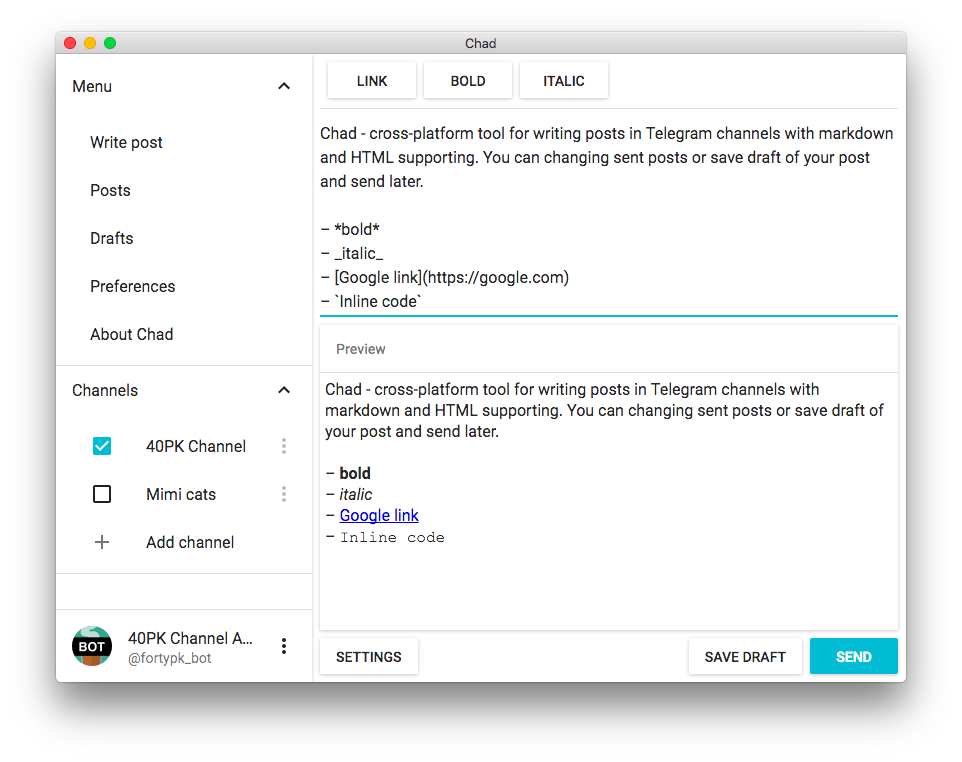
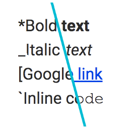
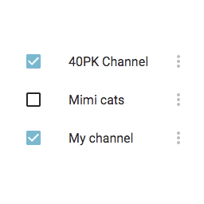
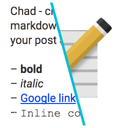
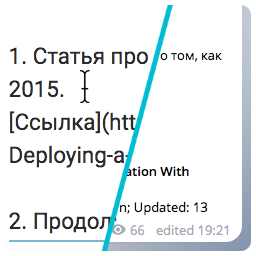

Chad - advanced features for publishing in the Telegram channels.

Features

Preview post
You can see how your post looks before sending it to the Telegram channel. Supported markdown-style and HTML-style formatting.

Multiple channels
You have multiple channels? You need to send the same post in them? Chad makes it possible to publish a post to multiple channels at once, just select the desired channels.

Drafts
Save the drafts of posts, change it later, and then send to the Telegram channel(s). It's easy!

Change posts
If you have sent a message to the channel Telegram, and then you need to complete it, or fix a mistake, do not worry, the Chad can change already sent messages.